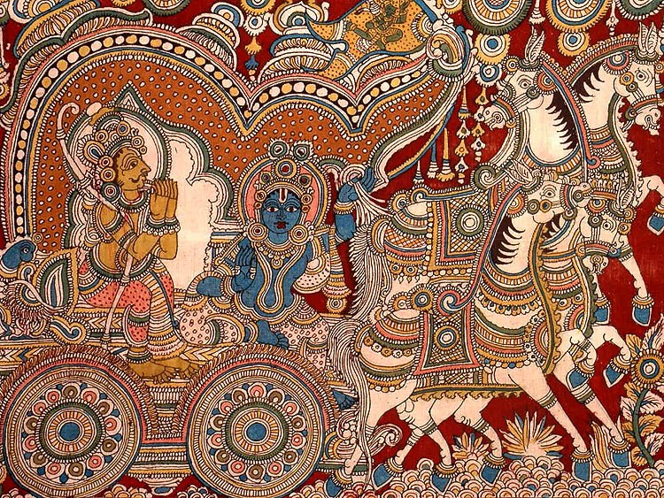

Certified. Authentic. Rooted in the soil they come from.
A Geographical Indication (GI) tag is an official certification given to products that originate from a specific region and possess qualities, reputation or characteristics essentially attributable to that origin. It legally protects the name so that only genuine producers from that region can use it — safeguarding traditional artisans, farmers and their livelihoods from imitation.